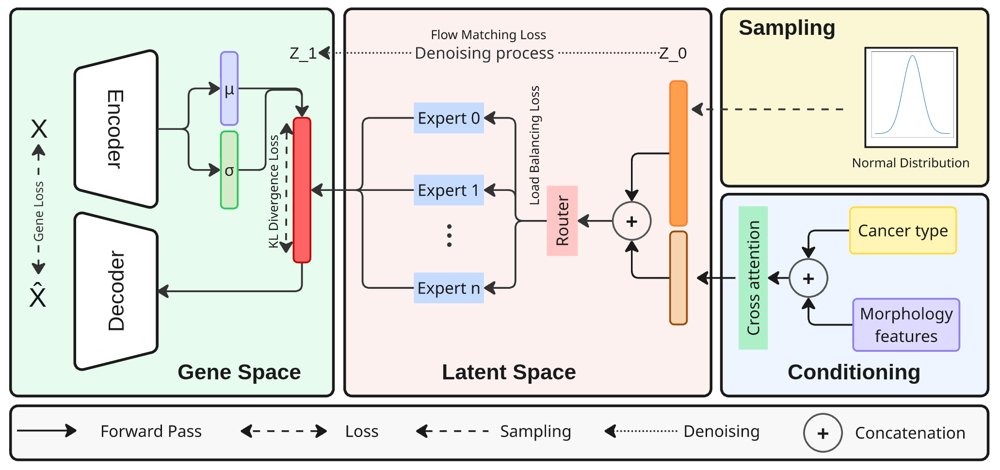
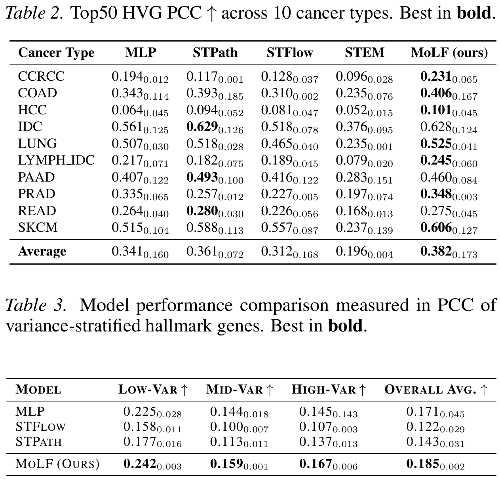
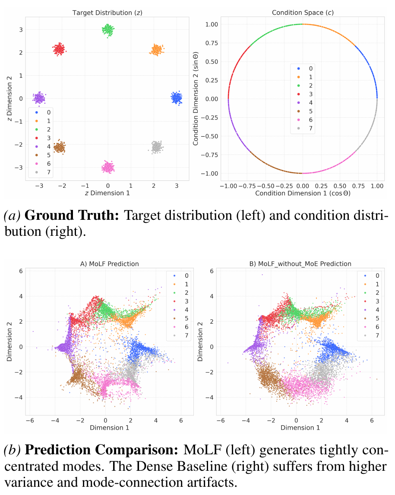
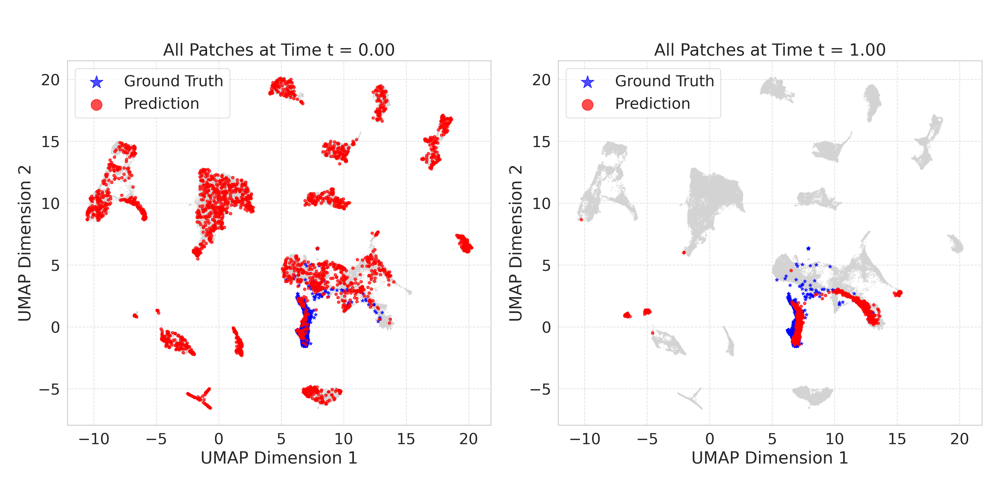
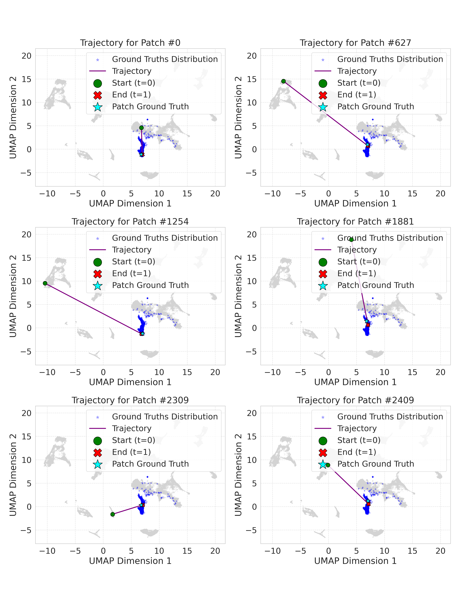
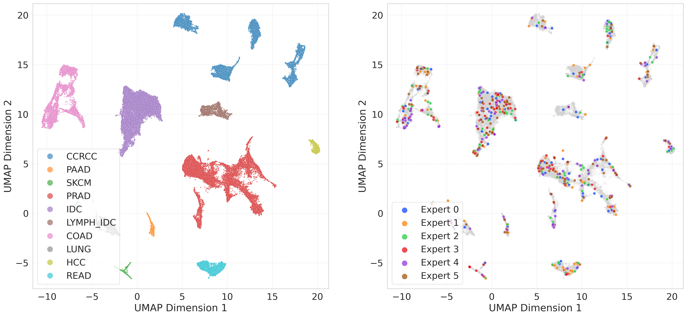
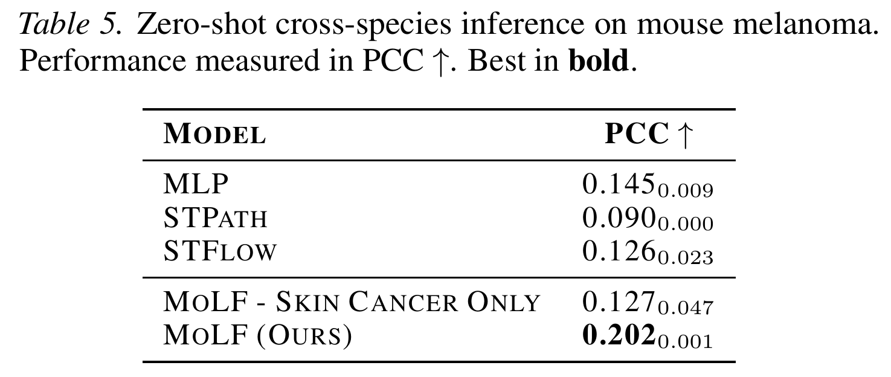

We introduce MoLF (Mixture-of-Latent-Flow), a generative model for scalable pan-cancer histogenomics. By leveraging a Mixture-of-Experts (MoE) velocity field within a conditional Flow Matching framework, MoLF effectively decouples diverse tissue patterns. It establishes a new state-of-the-art performance, and demonstrates robust zero-shot generalization to cross-species data.

MoLF (Mixture-of-Latent-Flow) Overview
We evaluated MoLF on the HEST-1k pan-cancer benchmark. Our results show that MoLF consistently outperforms current state-of-the-art methods:

To isolate inductive bias, we compared MoLF against a dense baseline on a synthetic 8-Gaussian distribution.
The Dense Baseline (Right) suffers from severe averaging artifacts due to shared parameterization.
In contrast, MoLF (Left) mitigates these artifacts by routing inputs to specialized experts, achieving significantly sharper mode separation.

MoLF (Sharper Modes) vs. Dense Baseline (Artifacts)
We first visualize the global manifold alignment. The initial Gaussian noise (red, left) is transported in a single ODE step to a structured manifold (red, right) that well aligns with the ground truth gene distribution (blue). This confirms the model successfully approximates the target distribution.

Macro-scale Manifold Alignment
At a finer granularity, tracing individual patch trajectories demonstrates micro-scale precision. The model learns specific paths transporting random noise to the correct target gene expression, effectively solving the conditional optimal transport problem.

Micro-scale Trajectory Analysis
The UMAP visualization below shows latent gene embeddings colored by cancer type (Left) and by the active Expert (Right).
Notably, experts are not segregated by cancer type (e.g., there is no single "Lung Cancer Expert"). Instead, they work collaboratively, with multiple experts contributing to different regions of the latent space across all tissues. This allows MoLF to learn shared biological motifs rather than overfitting to specific datasets. Crucially, this strategy ensures that collaborative experts adapt to new cancer types better than rigid cancer specialists, as they can flexibly recombine learned biological primitives to characterize unseen tissues.

Distributed Expert Strategy
We evaluated MoLF on a zero-shot task: training on human data and testing on the HEST1k Mouse Melanoma dataset.
The Pan-Cancer MoLF significantly outperforms the tissue-aligned baseline. This validates our core hypothesis: the diversity of the pan-cancer dataset forces the Mixture-of-Experts to decompose visual signals into fundamental biological primitives. By learning these reusable, invariant motifs, MoLF maintains predictive stability even across species barriers.

Zero-shot Cross-species Generalization